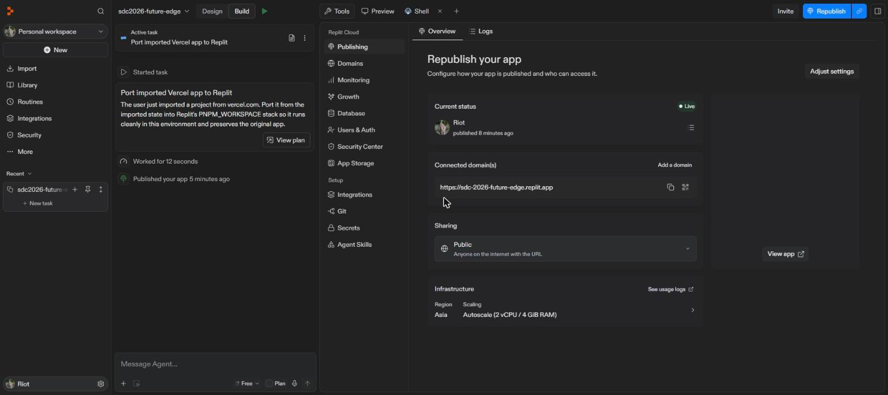
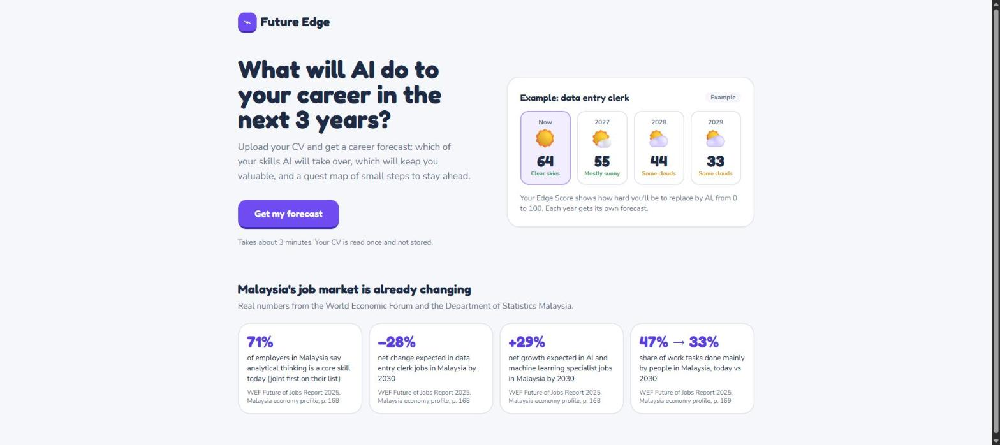

| Replit account | riotbek07 (team account) |
| Replit project | https://replit.com/@riotbek07/sdc2026-future-edge |
| Live deployment (Replit) | https://sdc-2026-future-edge.replit.app |
| Deployment type | Replit autoscale deployment, Asia region, 2 vCPU / 4 GiB · public access |
| How Replit was used | Imported from GitHub; dependencies installed, frontend built, 49 tests and 53 course-link checks run in the Replit Shell; app published with .replit → build.sh → start.sh; optional API key kept in Replit Secrets. |
| Screenshots taken | 24 October 2026 |

